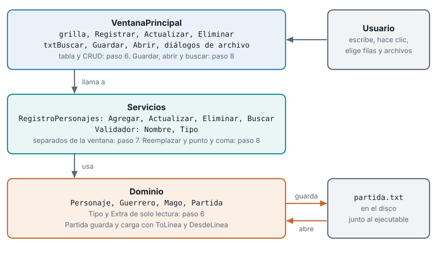
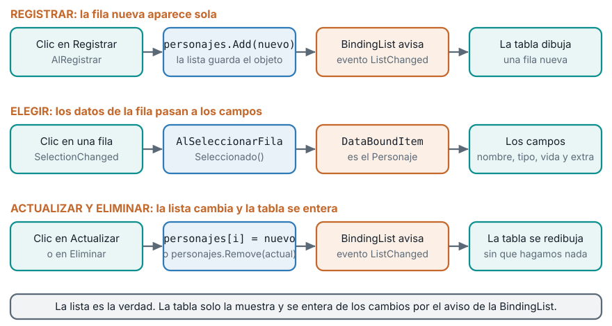
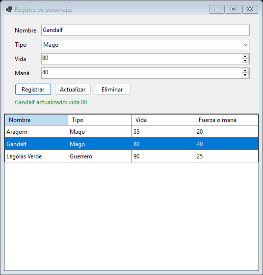
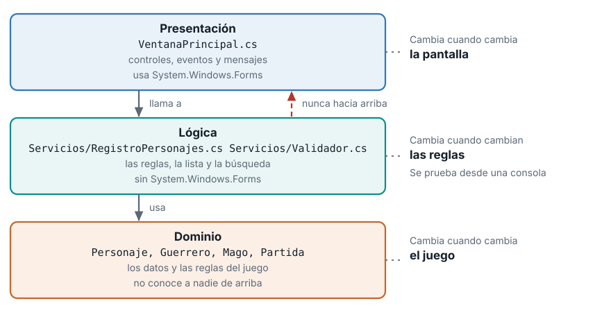
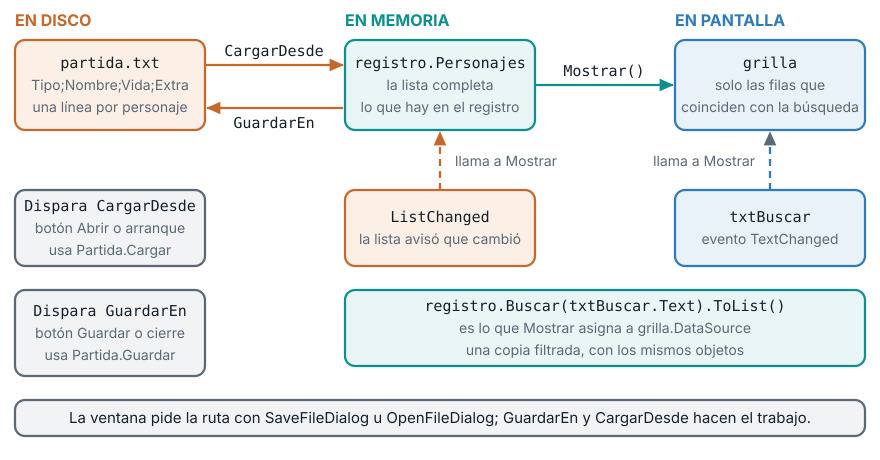
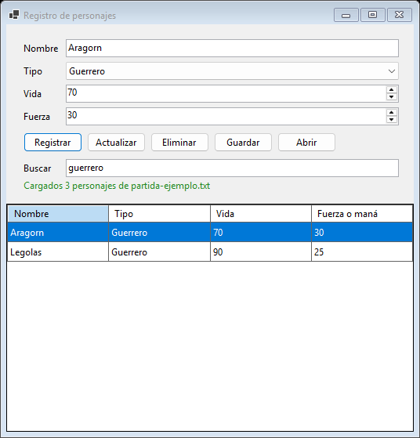
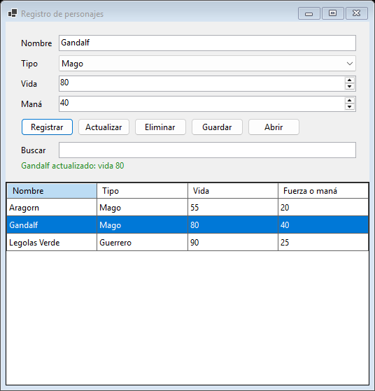

Unidad 3. Interfaz gráfica con Windows Forms, parte 2: lista de objetos, lógica separada y archivos
| Asignatura | Herramientas de Programación I (ET0047) |
| Programa | Tecnología en Desarrollo de Software |
| Unidad | Unidad 3. Diseño y desarrollo de aplicaciones gráficas aplicando la POO |
| Saberes | Elementos GUI con Windows Forms: propiedades y eventos de control. Interfaz gráfica desarrollada mediante código, con programación orientada a objetos y persistencia de información |
Esta guía se probó con el SDK de .NET 10.0.302.
Esta es la segunda parte de la guía de interfaz gráfica con Windows Forms. En la parte 1 construiste, desde cero y solo con código, una ventana que pide los datos de un personaje del videojuego, los valida y los registra. Aquí conviertes esa ventana en una aplicación completa: muestra la lista de personajes, permite corregirlos y borrarlos, separa la lógica de la pantalla, guarda y abre archivos, y busca entre los personajes. La guía sirve para estudiar por tu cuenta, sin haber asistido a la clase y sin otro material. Cada bloque de código sale de un proyecto que se compiló y se probó, y cada mensaje de la ventana que ves citado es el texto exacto que produce el programa.
1 El problema general: la ventana que olvida
Termina el paso 5 y abre la aplicación. Registras a Aragorn y la ventana responde Aragorn registrado: vida 70. Los campos se limpian. Registras a Gandalf. Ahora hazte una pregunta: ¿dónde está Aragorn?
En ningún lado. El objeto Guerrero que creaste vivía en una variable local dentro del manejador AlRegistrar. Cuando el método terminó, la variable desapareció y el objeto con ella. La ventana confirma el registro y no recuerda nada.
Una aplicación de gestión necesita tres cosas que la ventana del paso 5 no tiene:
- Recordar. Los personajes tienen que seguir existiendo mientras la ventana esté abierta, y verse.
- Mantenerse ordenada. Si cada regla nueva se suma al formulario, el archivo crece hasta que nadie se atreve a tocarlo.
- Sobrevivir al cierre. Al cerrar la ventana la memoria se libera. Lo que no está en un archivo se pierde.
Cada una de esas tres necesidades es una de las tres partes de esta guía.
2 El mapa de esta parte
| Paso | El problema | La idea que lo resuelve | Archivos que aparecen o cambian |
|---|---|---|---|
| 6 | Los personajes registrados no se ven, no se corrigen ni se borran | Una tabla (DataGridView) enlazada a una BindingList<Personaje> y un CRUD de personajes |
VentanaPrincipal.cs, y Personaje.cs, Guerrero.cs y Mago.cs con las propiedades Tipo y Extra |
| 7 | El formulario mezcla controles con reglas de negocio y crece sin control | Separar la presentación de la lógica: un servicio y un validador que no conocen Windows Forms | Servicios/RegistroPersonajes.cs, Servicios/Validador.cs, VentanaPrincipal.cs más corto, y un programa de consola que prueba la lógica sin ventana |
| 8 | Al cerrar se pierde todo y encontrar un personaje entre muchos es lento | Persistencia con Partida, diálogos de abrir y guardar, y un cuadro de búsqueda |
VentanaPrincipal.cs, Servicios/RegistroPersonajes.cs y Servicios/Validador.cs |
Cada paso es un proyecto que compila y se ejecuta. Un paso parte del anterior: el paso 6 evoluciona la aplicación del paso 5, el 7 evoluciona la del 6 y el 8 evoluciona la del 7. Los pasos 6, 7 y 8 usan el mismo caso, el registro de personajes del videojuego de la clase de POO (Personaje, Guerrero, Mago y Partida). Si necesitas repasar esas clases, están en la guía Unidad 3. Programación orientada a objetos.

Este diagrama es el destino. Vuelve a él al terminar cada paso y ubica qué pieza acabas de agregar.
Vocabulario nuevo
| Término | Qué significa |
|---|---|
DataGridView |
El control que muestra una lista de objetos como una tabla de filas y columnas |
BindingList<T> |
Una lista que avisa, con el evento ListChanged, cada vez que se agrega, cambia o quita un elemento |
DataSource |
La propiedad de la tabla que dice de dónde salen sus filas |
| CRUD | Las cuatro operaciones de una aplicación de gestión: crear, leer, actualizar y eliminar |
| Capa | Un grupo de clases con una responsabilidad: presentación (la ventana), lógica (reglas y lista) y dominio (los datos del juego) |
| Servicio | Una clase de la capa de lógica que ofrece operaciones sobre los datos, como RegistroPersonajes |
| Excepción | Una señal de error que detiene el programa si nadie la atrapa con try y catch |
| Cuadro de diálogo | Una ventana estándar de Windows que pide algo al usuario, como la ruta de un archivo |
3 Requisitos
- Windows 10 u 11. Windows Forms solo corre en Windows.
- El SDK de .NET 10. En una terminal,
dotnet --versiondebe imprimir un número que empiece por10.. La guía se probó con 10.0.302. - VS Code con la extensión C# de Microsoft. No usas el diseñador visual: todo se escribe con código.
- El proyecto de la parte 1 funcionando. Esta guía retoma desde la aplicación del paso 5 de la parte 1, la carpeta
RegistroPersonajescon su validación y suErrorProvider. Si no la tienes, termina primero la parte 1.
Windows Forms no corre en esos sistemas. Necesitas una máquina virtual con Windows o acceso remoto a una sala de cómputo con Windows. Pídele a tu docente el acceso si no tienes otra opción.
4 Cómo trabajar esta guía
- Sigue el orden. Cada paso nace de un problema del anterior.
- Escribe el código tú mismo. Copiarlo y pegarlo compila, pero no se aprende. Escríbelo, equivócate y lee el error.
- Cada paso tiene la misma forma: el problema, la idea, el paso a paso, qué debes ver, un laboratorio de experimentos que rompen cosas a propósito, los errores frecuentes, un ejercicio para practicar y un resumen.
- El código viene por tramos. Los formularios de estos pasos tienen entre 227 y 314 líneas. No los repito completos en cada paso: te muestro el tramo que cambia y te explico qué cambió respecto al paso anterior. Los tramos no se alteran: cada bloque de esta guía es un fragmento real y contiguo del archivo del paso. Al final de cada paso hay una tabla que dice en qué rango de líneas del archivo completo va cada tramo, para que armes el archivo entero sin dudas.
- Dos nombres parecidos. En el código,
tablaes elTableLayoutPanelque ordena los campos (lo conoces del paso 4) ygrillaes elDataGridViewque muestra la lista. En el texto llamo “la tabla” alDataGridViewy “el panel de campos” alTableLayoutPanel. - Guarda una copia antes de cada paso. Si algo se rompe, puedes volver. Con el Explorador de archivos, copia la carpeta
RegistroPersonajescompleta y pégala con otro nombre, por ejemploRegistroPersonajes-paso5. - Ejecuta al terminar cada paso con
dotnet run, dentro de la carpeta del proyecto. Mientras la ventana esté abierta, la terminal queda ocupada: ciérrala antes de volver a ejecutar o a compilar. - Una presentación acompaña la clase presencial. Esta guía cubre lo mismo con más detalle, y tiene todo lo necesario si no asististe.
5 Paso 6. Una lista de personajes en una tabla
6.1 El problema
Registras a Aragorn, a Gandalf y a Legolas. La ventana confirma cada registro con un mensaje verde, pero después no puedes ver quiénes son, no puedes corregir la vida de Aragorn que escribiste mal, no puedes borrar a Legolas y nada impide que registres otro “Aragorn”. Los objetos se crean y se pierden.
Recuerda el paso 2: para que la ventana contara clics usaste un campo de la clase, clics, que guardaba el número entre un evento y el siguiente. Los personajes necesitan lo mismo: un campo de VentanaPrincipal que los guarde mientras la ventana exista. Pero guardarlos no basta, hay que mostrarlos, y para eso se usa una tabla.
6.2 La idea
La lista y la tabla. Un campo de tipo List<Personaje> guardaría los objetos, pero una List no avisa a nadie cuando cambia: si agregas un personaje, la tabla no se entera. La solución es BindingList<Personaje>, una lista con timbre. Cada vez que alguien agrega, cambia o quita un elemento, toca el timbre (el evento ListChanged) y la tabla, que está escuchando, se redibuja sola. Con una BindingList no escribes código para refrescar la tabla.
El DataGridView es el control que dibuja filas y columnas. Se conecta a la lista con su propiedad DataSource. Cada fila es un objeto de la lista. Cada columna toma el valor de una propiedad del objeto, la que le indicas con DataPropertyName.

CRUD. Casi toda aplicación de gestión hace cuatro cosas con sus datos, y cada una tiene un botón o un control:
| Operación | En inglés | En la ventana |
|---|---|---|
| Crear | Create | El botón Registrar agrega un personaje a la lista |
| Leer | Read | La tabla muestra todos los personajes |
| Actualizar | Update | El botón Actualizar reemplaza el personaje elegido por los datos de los campos |
| Eliminar | Delete | El botón Eliminar quita el personaje elegido |
Dos dificultades que aparecen y se resuelven en este paso.
- La tabla solo muestra propiedades públicas.
PersonajetieneNombre,VidayEstaVivo. Pero el tipo del personaje (Guerrero o Mago) y su dato propio (la fuerza o el maná) no son propiedades de la clase base:Fuerzaexiste solo enGuerreroyManasolo enMago. Una tabla que muestra una lista dePersonajeno puede preguntar porFuerza. La solución es agregar a la clase base dos propiedades abstractas de solo lectura,TipoyExtra, y que cada subclase diga cuánto valen. Es el polimorfismo de la guía de POO: la tabla le preguntaExtraa cada objeto y cada objeto responde a su manera.GuerreroyMagoconviven en la misma tabla. - Un personaje no se puede modificar.
Nombreno tienesetyVidatieneprivate set: lo diseñaste así para proteger las reglas. EntoncesActualizarno cambia el objeto: crea uno nuevo con los datos de los campos y lo coloca en la misma posición de la lista.
El nombre es la clave. En esta aplicación no puede haber dos personajes con el mismo nombre, sin distinguir mayúsculas. La validación del paso 5 todavía no tenía esta regla. Aquí se agrega como una regla más de Validar.
6.3 Paso a paso
Qué cambia respecto al paso 5: VentanaPrincipal.cs pasa de 130 a 238 líneas, porque agrega la tabla, dos botones, la lista de personajes y las reglas de actualizar y eliminar. El dominio recibe Tipo y Extra. Program.cs y el .csproj no cambian.
6.3.1 Prepara la carpeta
Abre una terminal y entra a la carpeta de tu proyecto del paso 5, la que contiene el archivo RegistroPersonajes.csproj:
cd RegistroPersonajesSi quieres conservar el paso 5 intacto, haz antes la copia que te sugerí. Todo lo que sigue se hace sobre los archivos de esa carpeta: no se crea un proyecto nuevo. El archivo .csproj y Program.cs no cambian. Program.cs tiene [STAThread], que en el paso 8 necesitarán los diálogos de abrir y guardar, y ya lo tiene desde el paso 2.
6.3.2 Agrega Tipo y Extra al dominio
En tu proyecto ya tienes Personaje.cs, Guerrero.cs y Mago.cs, las clases de la guía de POO. Cada una recibe unas pocas líneas nuevas y nada más.
En Personaje.cs, justo debajo de la propiedad EstaVivo, agrega las dos propiedades abstractas:
// Nuevo en el paso 6: la tabla solo puede mostrar propiedades públicas de la clase base.
// Cada subclase dice cuál es su tipo y cuál es su dato propio (fuerza o maná).
public abstract string Tipo { get; }
public abstract int Extra { get; }abstract significa que Personaje declara que existen, pero no dice cuánto valen: cada subclase está obligada a decirlo. { get; } las hace de solo lectura. Los dos comentarios explican por qué existen. El resto de Personaje.cs no cambia.
En Guerrero.cs, debajo de la propiedad Fuerza:
public override string Tipo => "Guerrero";
public override int Extra => Fuerza;En Mago.cs, debajo de la propiedad Mana:
public override string Tipo => "Mago";
public override int Extra => Mana;override implementa la propiedad abstracta de la clase base. => crea una propiedad calculada: no guarda nada, responde cada vez que se le pregunta. Un guerrero responde que su tipo es "Guerrero" y que su extra es su fuerza. Un mago responde "Mago" y su maná. Partida.cs no cambia: el formato del archivo sigue siendo Tipo;Nombre;Vida;Extra, y ahora Tipo y Extra coinciden con las propiedades.
Si compilas sin hacer estos cambios, el formulario nuevo pregunta por Tipo y Extra y el compilador no los encuentra. Si los pones en Personaje pero olvidas Guerrero o Mago, el compilador exige que las subclases los implementen. Los dos errores aparecen en la sección de errores frecuentes de este paso.
6.3.3 Los campos nuevos de la ventana
Abre VentanaPrincipal.cs. Lo primero que cambia es la parte de arriba: el using de la lista, los botones nuevos, la tabla y la lista de personajes. Este es el tramo completo, de la primera línea a la lista:
using System.ComponentModel;
// Paso 6: los personajes registrados se quedan en una lista que se ve en una tabla y se puede corregir.
class VentanaPrincipal : Form
{
private readonly Label lblNombre = new() { Text = "Nombre", AutoSize = true };
private readonly TextBox txtNombre = new();
private readonly Label lblTipo = new() { Text = "Tipo", AutoSize = true };
private readonly ComboBox cboTipo = new() { DropDownStyle = ComboBoxStyle.DropDownList };
private readonly Label lblVida = new() { Text = "Vida", AutoSize = true };
private readonly NumericUpDown numVida = new() { Minimum = 0, Maximum = 100, Value = 100 };
private readonly Label lblExtra = new() { Text = "Extra", AutoSize = true };
private readonly NumericUpDown numExtra = new() { Minimum = 0, Maximum = 100, Value = 10 };
private readonly Button btnRegistrar = new() { Text = "Registrar", AutoSize = true };
private readonly Button btnActualizar = new() { Text = "Actualizar", AutoSize = true };
private readonly Button btnEliminar = new() { Text = "Eliminar", AutoSize = true };
private readonly Label lblEstado = new() { AutoSize = true };
private readonly ErrorProvider errores = new();
private readonly DataGridView grilla = new();
// Una BindingList avisa a la tabla cada vez que cambia, así que no hay que refrescarla a mano.
private readonly BindingList<Personaje> personajes = new();Qué es nuevo respecto al paso 5:
| Línea | Qué hace | Por qué |
|---|---|---|
| 1 | using System.ComponentModel; |
BindingList vive en ese espacio de nombres, y el resto de los tipos de esta ventana ya vienen incluidos por los using implícitos del proyecto |
| 15 y 16 | btnActualizar y btnEliminar |
Dos operaciones más del CRUD: ya tienes Registrar |
| 19 | private readonly DataGridView grilla = new(); |
La tabla que muestra la lista, creada como los demás controles |
| 21 y 22 | BindingList<Personaje> personajes |
La lista que guarda los personajes mientras la ventana exista. Es un campo, como clics en el paso 2. El comentario resume la idea: la lista avisa a la tabla cuando cambia |
Las líneas 4 a 14, 17 y 18 ya las conocías: son los controles del paso 5. El ErrorProvider (línea 18) sigue siendo el que marca los campos con error.
6.3.4 El constructor: eventos y distribución
El constructor crece, pero casi todo su contenido es del paso 4 y del paso 5. Te muestro entero el tramo y marco abajo lo nuevo:
public VentanaPrincipal()
{
Text = "Registro de personajes";
ClientSize = new Size(520, 520);
MinimumSize = new Size(440, 460);
StartPosition = FormStartPosition.CenterScreen;
cboTipo.Items.AddRange(new object[] { "Guerrero", "Mago" });
cboTipo.SelectedIndexChanged += AlCambiarTipo;
btnRegistrar.Click += AlRegistrar;
btnActualizar.Click += AlActualizar;
btnEliminar.Click += AlEliminar;
grilla.SelectionChanged += AlSeleccionarFila;
AcceptButton = btnRegistrar;
foreach (Control c in new Control[] { lblNombre, lblTipo, lblVida, lblExtra, lblEstado })
{
c.Anchor = AnchorStyles.Left;
}
foreach (Control c in new Control[] { txtNombre, cboTipo, numVida, numExtra })
{
c.Anchor = AnchorStyles.Left | AnchorStyles.Right;
}
var tabla = new TableLayoutPanel
{
Dock = DockStyle.Top,
AutoSize = true,
ColumnCount = 2,
Padding = new Padding(16)
};
tabla.ColumnStyles.Add(new ColumnStyle(SizeType.AutoSize));
tabla.ColumnStyles.Add(new ColumnStyle(SizeType.Percent, 100));
tabla.Controls.Add(lblNombre, 0, 0);
tabla.Controls.Add(txtNombre, 1, 0);
tabla.Controls.Add(lblTipo, 0, 1);
tabla.Controls.Add(cboTipo, 1, 1);
tabla.Controls.Add(lblVida, 0, 2);
tabla.Controls.Add(numVida, 1, 2);
tabla.Controls.Add(lblExtra, 0, 3);
tabla.Controls.Add(numExtra, 1, 3);
var botones = new FlowLayoutPanel { AutoSize = true, Dock = DockStyle.Fill };
botones.Controls.AddRange(new Control[] { btnRegistrar, btnActualizar, btnEliminar });
tabla.Controls.Add(botones, 0, 4);
tabla.SetColumnSpan(botones, 2);
tabla.Controls.Add(lblEstado, 0, 5);
tabla.SetColumnSpan(lblEstado, 2);
ConfigurarGrilla();
// La tabla se agrega primero: Dock = Fill ocupa lo que deja libre el panel de arriba.
Controls.Add(grilla);
Controls.Add(tabla);
}| Línea | Qué hace | Por qué |
|---|---|---|
| 27 y 28 | ClientSize de 520 por 520 y MinimumSize de 440 por 460 |
La ventana necesita más alto: ahora lleva una tabla debajo de los campos |
| 34 a 36 | Un evento Click por botón |
Registrar, Actualizar y Eliminar llaman cada uno a su manejador (conexión con +=, como en el paso 2) |
| 37 | grilla.SelectionChanged += AlSeleccionarFila; |
Cada vez que cambia la fila elegida en la tabla, se ejecuta AlSeleccionarFila |
| 51 y 52 | Dock = DockStyle.Top y AutoSize = true en el panel de campos |
Antes el panel ocupaba toda la ventana (Fill). Ahora solo ocupa lo que necesita, arriba. El resto de la ventana queda libre para la tabla |
| 69 | botones.Controls.AddRange(...) |
Los tres botones juntos en el mismo FlowLayoutPanel |
| 76 | ConfigurarGrilla(); |
La configuración de la tabla vive en un método propio para que el constructor no se llene de líneas |
| 78 a 80 | Controls.Add(grilla); y después Controls.Add(tabla); |
El orden importa. La tabla se agrega primero y el panel de campos después. Con Dock, WinForms reparte el espacio empezando por el último control agregado: el panel de arriba toma lo que necesita y la tabla (Fill) ocupa lo que queda libre. Si inviertes el orden, las primeras filas quedan tapadas por el panel |
6.3.5 Configurar la tabla
DataGridView tiene decenas de propiedades. Estas son las que necesita esta ventana:
private void ConfigurarGrilla()
{
grilla.Dock = DockStyle.Fill;
grilla.ReadOnly = true; // la tabla solo muestra; los cambios se hacen con los campos y los botones
grilla.AllowUserToAddRows = false;
grilla.AllowUserToDeleteRows = false;
grilla.SelectionMode = DataGridViewSelectionMode.FullRowSelect;
grilla.MultiSelect = false;
grilla.RowHeadersVisible = false;
grilla.BackgroundColor = SystemColors.Window; // sin el gris de fondo debajo de las filas
grilla.AutoSizeColumnsMode = DataGridViewAutoSizeColumnsMode.Fill;
// Una columna por propiedad pública de Personaje. Tipo y Extra existen gracias al dominio6.
grilla.AutoGenerateColumns = false;
grilla.Columns.Add(new DataGridViewTextBoxColumn { HeaderText = "Nombre", DataPropertyName = "Nombre" });
grilla.Columns.Add(new DataGridViewTextBoxColumn { HeaderText = "Tipo", DataPropertyName = "Tipo" });
grilla.Columns.Add(new DataGridViewTextBoxColumn { HeaderText = "Vida", DataPropertyName = "Vida" });
grilla.Columns.Add(new DataGridViewTextBoxColumn { HeaderText = "Fuerza o maná", DataPropertyName = "Extra" });
grilla.DataSource = personajes;
}| Línea | Qué hace | Por qué |
|---|---|---|
| 85 | Dock = DockStyle.Fill |
La tabla ocupa todo el espacio libre |
| 86 | ReadOnly = true |
La tabla solo muestra. Los cambios se hacen con los campos y los botones, que son los que aplican las reglas |
| 87 y 88 | AllowUserToAddRows y AllowUserToDeleteRows en false |
Dejan claro que las filas se agregan y se borran solo con los botones. Sin ellas, la tabla podría ofrecer una fila vacía al final y dejar borrar filas con la tecla Supr, saltándose tu validación |
| 89 y 90 | SelectionMode = FullRowSelect y MultiSelect = false |
Un clic elige toda la fila, y una sola a la vez. Así Seleccionado() sabe de qué personaje se trata |
| 91 | RowHeadersVisible = false |
Quita la columna gris de la izquierda, que aquí no sirve para nada |
| 92 | BackgroundColor = SystemColors.Window |
Pinta de blanco el fondo que queda debajo de las filas |
| 93 | AutoSizeColumnsMode = Fill |
Las columnas se reparten el ancho de la tabla |
| 96 | AutoGenerateColumns = false |
Tú decides las columnas. Si lo dejas en true, la tabla crea una columna por cada propiedad pública, incluida EstaVivo, que no quieres |
| 97 a 100 | Una DataGridViewTextBoxColumn por columna |
HeaderText es el título que ve el usuario y DataPropertyName es el nombre de la propiedad de Personaje de la que sale el valor. La cuarta columna toma Extra y la titula Fuerza o maná |
| 101 | grilla.DataSource = personajes; |
La conexión: la tabla muestra la lista y escucha su ListChanged. Va después de definir las columnas |
El método AlCambiarTipo, que cambia la etiqueta Extra por Fuerza o Maná, es el del paso 5 y no cambia (líneas 104 a 112 del archivo).
6.3.6 Elegir una fila: de la tabla a los campos
Cuando el usuario hace clic en una fila, sus datos pasan a los campos para poder corregirlos. Es el camino contrario al del paso 3, donde leías los campos para crear un objeto:
// Al elegir una fila, sus datos pasan a los campos para poder corregirlos.
private void AlSeleccionarFila(object? sender, EventArgs e)
{
if (Seleccionado() is not Personaje p) return;
errores.Clear();
txtNombre.Text = p.Nombre;
cboTipo.SelectedItem = p.Tipo;
numVida.Value = p.Vida;
// Asignar un valor fuera de rango a un NumericUpDown lanza una excepción.
numExtra.Value = Math.Clamp(p.Extra, (int)numExtra.Minimum, (int)numExtra.Maximum);
}
private Personaje? Seleccionado() =>
grilla.SelectedRows.Count > 0 ? grilla.SelectedRows[0].DataBoundItem as Personaje : null;| Línea | Qué hace | Por qué |
|---|---|---|
| 115 | Manejador del evento SelectionChanged |
Se ejecuta cada vez que cambia la fila elegida |
| 117 | if (Seleccionado() is not Personaje p) return; |
Pregunta cuál es el personaje elegido. Si no hay ninguno, termina. Si hay, lo deja en la variable p ya lista para usar |
| 119 | errores.Clear(); |
Si había un error marcado de antes, ya no corresponde |
| 120 a 122 | Copian Nombre, Tipo y Vida del personaje a los campos |
El camino inverso: del objeto al control. Asignar SelectedItem con el texto del tipo elige esa opción en el ComboBox |
| 124 | Math.Clamp(p.Extra, ...) |
Un NumericUpDown lanza una excepción si le asignas un valor fuera de su rango. El dominio acepta una fuerza de 500, pero numExtra llega solo a 100. Math.Clamp recorta el valor al rango del control. Hoy no puedes crear desde la ventana un personaje con extra mayor que 100, pero en el paso 8 llegarán personajes desde un archivo |
| 127 y 128 | Seleccionado() |
Devuelve el personaje de la fila elegida o null. SelectedRows[0] es la fila y DataBoundItem es el objeto que hay detrás de esa fila: el mismo Personaje que está en la lista. as Personaje lo devuelve como Personaje, o null si no es uno |
6.3.7 Validar con una clave única
Validar del paso 5 revisaba el largo del nombre y el tipo. Ahora recibe un parámetro más y suma una regla:
// "editando" es la fila que se está corrigiendo: su propio nombre no cuenta como repetido.
private bool Validar(Personaje? editando)
{
errores.Clear();
string nombre = txtNombre.Text.Trim();
if (nombre.Length == 0 || nombre.Length > 20)
{
errores.SetError(txtNombre, "Escriba un nombre de 1 a 20 caracteres");
txtNombre.Focus();
return false;
}
// El nombre es la clave: no puede haber dos personajes con el mismo.
if (personajes.Any(p => p != editando && p.Nombre.Equals(nombre, StringComparison.OrdinalIgnoreCase)))
{
errores.SetError(txtNombre, "Ya existe un personaje con ese nombre");
txtNombre.Focus();
return false;
}
if (cboTipo.SelectedItem == null)
{
errores.SetError(cboTipo, "Elija un tipo de personaje");
cboTipo.Focus();
return false;
}
return true;
}| Línea | Qué hace | Por qué |
|---|---|---|
| 131 | Validar(Personaje? editando) |
editando es el personaje que se está corrigiendo, o null si se está registrando uno nuevo. El ? indica que puede ser nulo |
| 144 | personajes.Any(p => p != editando && p.Nombre.Equals(nombre, StringComparison.OrdinalIgnoreCase)) |
Pregunta si hay algún personaje que no sea el que estás editando y que tenga el mismo nombre, sin distinguir mayúsculas. Any recibe una función que devuelve true o false para cada elemento. Sin la parte p != editando, no podrías actualizar la vida de Aragorn sin cambiarle el nombre, porque chocaría consigo mismo |
| 146 | "Ya existe un personaje con ese nombre" |
El mensaje exacto que verás junto al campo |
La estructura es la del paso 5: cada regla marca el campo con errores.SetError, le lleva el foco y devuelve false en cuanto algo falla.
6.3.8 Tres métodos de apoyo
En el paso 5, AlRegistrar creaba el personaje, mostraba el mensaje y limpiaba los campos, todo en el mismo método. Ahora hay tres manejadores que necesitan hacer lo mismo, así que cada tarea tiene su método:
private Personaje CrearDesdeCampos()
{
string nombre = txtNombre.Text.Trim();
int vida = (int)numVida.Value;
int extra = (int)numExtra.Value;
return cboTipo.SelectedItem is "Mago"
? new Mago(nombre, vida, extra)
: new Guerrero(nombre, vida, extra);
}
private void Informar(string texto, bool correcto)
{
lblEstado.ForeColor = correcto ? Color.ForestGreen : Color.Firebrick;
lblEstado.Text = texto;
}
private void Limpiar()
{
errores.Clear();
txtNombre.Clear();
cboTipo.SelectedIndex = -1;
numVida.Value = 100;
numExtra.Value = 10;
grilla.CurrentCell = null; // sin fila actual ni seleccionada
grilla.ClearSelection();
txtNombre.Focus();
}| Método | Qué hace | Por qué es un método aparte |
|---|---|---|
CrearDesdeCampos |
Lee los campos y devuelve un Guerrero o un Mago (líneas 163 a 169) |
Lo usan Registrar y Actualizar: es el mismo camino del paso 3, del control al objeto |
Informar |
Pone el texto en lblEstado, en verde si salió bien y en rojo si no (líneas 174 y 175) |
Los tres manejadores muestran mensajes y no deben repetir esas dos líneas |
Limpiar |
Deja la ventana lista para el siguiente personaje (líneas 180 a 187) | Además de vaciar los campos, CurrentCell = null y ClearSelection() dejan la tabla sin fila elegida. Es necesario: la tabla deja elegida la primera fila apenas tiene datos, aunque nadie la haya elegido, y el primer clic en Eliminar borraría un personaje que no elegiste |
6.3.9 El CRUD: registrar, actualizar y eliminar
Con todo lo anterior, los tres manejadores quedan cortos:
private void AlRegistrar(object? sender, EventArgs e)
{
if (!Validar(null))
{
Informar("No se registró: corrija el campo marcado", false);
return;
}
Personaje nuevo = CrearDesdeCampos();
personajes.Add(nuevo); // la tabla muestra la fila nueva sin que hagamos nada más
Informar($"{nuevo.Nombre} registrado: vida {nuevo.Vida}", true);
Limpiar();
}
private void AlActualizar(object? sender, EventArgs e)
{
Personaje? actual = Seleccionado();
if (actual == null)
{
Informar("Seleccione una fila para actualizar", false);
return;
}
if (!Validar(actual))
{
Informar("No se actualizó: corrija el campo marcado", false);
return;
}
// Personaje no se puede modificar (Nombre y Tipo no tienen set): se cambia por uno nuevo en la misma posición.
Personaje nuevo = CrearDesdeCampos();
personajes[personajes.IndexOf(actual)] = nuevo;
Informar($"{nuevo.Nombre} actualizado: vida {nuevo.Vida}", true);
Limpiar();
}
private void AlEliminar(object? sender, EventArgs e)
{
Personaje? actual = Seleccionado();
if (actual == null)
{
Informar("Seleccione una fila para eliminar", false);
return;
}
personajes.Remove(actual);
Informar($"{actual.Nombre} eliminado", true);
Limpiar();
}| Línea | Qué hace | Por qué |
|---|---|---|
| 192 a 196 | Si Validar(null) falla, muestra el mensaje en rojo y sale |
null significa “no estoy editando a nadie”: el nombre no puede coincidir con ninguno de la lista |
| 199 | personajes.Add(nuevo); |
Esta es toda la actualización de la tabla. La lista avisa con ListChanged y la tabla dibuja la fila. No hay código para refrescarla |
| 206 a 211 | Si no hay fila elegida, Actualizar lo dice y sale |
No se puede actualizar a nadie que no se eligió |
| 212 | Validar(actual) |
Ahora sí se pasa el personaje que se está editando: su propio nombre no cuenta como repetido |
| 218 a 220 | Crea un personaje nuevo y lo coloca en la misma posición | Como Personaje no se puede modificar (Nombre y Tipo no tienen set), Actualizar lo reemplaza: personajes[personajes.IndexOf(actual)] = nuevo;. Asignar a una posición de la lista también dispara ListChanged |
| 234 | personajes.Remove(actual); |
Quita el objeto de la lista y la tabla lo borra solo |
Este es el último tramo. Guarda, compila y ejecuta desde la terminal, dentro de la carpeta del proyecto:
dotnet run6.3.10 Cómo se arma el archivo completo
El código completo de este paso está en el archivo de referencia paso6/VentanaPrincipal.cs del material de la clase, líneas 1 a 238. Estos son los tramos en orden, con una línea en blanco entre un método y el siguiente:
| Líneas del archivo | Qué contiene | Dónde está en esta guía |
|---|---|---|
| 1 a 22 | using, comentario, clase, controles, grilla y personajes |
6.3.3 |
| 24 a 81 | El constructor | 6.3.4 |
| 83 a 102 | ConfigurarGrilla |
6.3.5 |
| 104 a 112 | AlCambiarTipo |
Igual que en el paso 5 |
| 114 a 128 | AlSeleccionarFila y Seleccionado |
6.3.6 |
| 130 a 159 | Validar(Personaje? editando) |
6.3.7 |
| 161 a 188 | CrearDesdeCampos, Informar y Limpiar |
6.3.8 |
| 190 a 237 | AlRegistrar, AlActualizar y AlEliminar |
6.3.9 |
| 238 | La llave que cierra la clase |
6.4 Qué debes ver
Ejecuta la aplicación y recorre estas ocho situaciones en orden. A la izquierda, lo que haces; a la derecha, el texto exacto que debe aparecer.
| Situación | Texto que se ve |
|---|---|
| Guerrero Aragorn, vida 70 | "Aragorn registrado: vida 70" |
| Nombre repetido | "No se registró: corrija el campo marcado" |
| Mensaje del ErrorProvider con nombre repetido | "Ya existe un personaje con ese nombre" |
| Actualizar la vida de Aragorn | "Aragorn actualizado: vida 55" |
| Actualizar con un nombre ocupado | "No se actualizó: corrija el campo marcado" |
| Actualizar sin fila elegida | "Seleccione una fila para actualizar" |
| Eliminar a Gandalf | "Gandalf eliminado" |
| Eliminar sin fila elegida | "Seleccione una fila para eliminar" |
Algunas aclaraciones para recorrerlo. Para las situaciones 4 a 7 necesitas dos personajes registrados, por ejemplo Aragorn y Gandalf. En la situación 3 el texto no sale en la etiqueta verde o roja de abajo, sino en el ErrorProvider: es el mensaje que aparece al pasar el ratón por el icono rojo junto al campo. En la situación 5, intenta ponerle a Aragorn el nombre de Gandalf.

La captura viene de una sesión de pruebas, así que sus filas pueden no coincidir con las tuyas (por ejemplo, ahí Aragorn aparece con tipo Mago). Lo que debes comprobar es la estructura. La fila elegida pasa a los campos. Las columnas son Nombre, Tipo, Vida y Fuerza o maná. El campo de la fuerza o el maná se llama Maná cuando el tipo elegido es Mago. Y un nombre repetido se rechaza.
6.5 Rompe esto y observa
Estos tres experimentos rompen algo a propósito. Después de cada uno, devuelve el código a como estaba.
Deja que la tabla decida las columnas. Borra la línea
grilla.AutoGenerateColumns = false;(línea 96) y ejecuta. Esperado: la tabla muestra cinco columnas, no cuatro. Aparece una columnaEstaVivoque tú no pediste, porque la tabla genera una columna por cada propiedad pública dePersonajeque no tenga ya una columna asignada. ConAutoGenerateColumnsenfalsesolo salen las que tú declaraste.Cambia la forma de elegir. Cambia
DataGridViewSelectionMode.FullRowSelect(línea 89) porDataGridViewSelectionMode.CellSelect. Registra un personaje, haz clic en una celda y mira los campos. Esperado: los campos no se llenan, y al pulsarEliminarel mensaje diceSeleccione una fila para eliminar. ConCellSelectel clic elige una celda y no una fila, entoncesSelectedRowsqueda vacío ySeleccionado()devuelvenull.Invierte el orden de los controles. Intercambia las líneas 79 y 80: primero
Controls.Add(tabla);y despuésControls.Add(grilla);. Esperado: el panel de campos se dibuja encima de la tabla y tapa el encabezado y las primeras filas, porque la tabla conFillse reparte el espacio antes que el panel. Al revés, como estaba, el panel toma lo que necesita y la tabla se queda con lo que sobra.
6.6 Errores frecuentes
| Qué ves | Causa | Cómo se resuelve |
|---|---|---|
No agregar Tipo y Extra al dominio |
error CS1061: "Personaje" no contiene una definición para "Tipo" y el mismo mensaje para Extra |
Agrega las dos propiedades abstractas a Personaje.cs (6.3.2) |
Agregarlas a Personaje pero no a Guerrero o Mago |
error CS0534: 'Guerrero' no implementa el miembro abstracto heredado 'Personaje.Tipo.get' |
Agrega Tipo y Extra con override en las dos subclases |
Usar List<Personaje> en vez de BindingList<Personaje> |
La ventana dice Aragorn registrado: vida 70 pero la tabla no muestra la fila, porque una List no avisa cuando cambia |
Cambia el tipo del campo y agrega using System.ComponentModel; |
Escribir mal un DataPropertyName |
La columna sale vacía, sin ningún error | Copia el nombre exacto de la propiedad pública, como Tipo o Extra |
Asignar numExtra.Value = p.Extra sin Math.Clamp |
ArgumentOutOfRangeException al elegir un personaje cuyo extra pasa de 100 |
Recorta con Math.Clamp al rango del control |
No deseleccionar la tabla en Limpiar |
Eliminar borra una fila que no elegiste |
Deja CurrentCell = null y ClearSelection() en Limpiar |
6.7 Para practicar
Agrega a la tabla una quinta columna, Vivo, que muestre si el personaje está vivo. No cambies el dominio: la propiedad EstaVivo ya existe y es pública.
Una columna de verdadero o falso se muestra mejor con una casilla: usa DataGridViewCheckBoxColumn en vez de DataGridViewTextBoxColumn, con HeaderText = "Vivo" y DataPropertyName = "EstaVivo". Agrégala en ConfigurarGrilla, antes de la línea que asigna el DataSource. Registra un personaje con vida 0 y comprueba que la casilla sale vacía.
6.8 Lo que aprendiste
- Los objetos que deben vivir entre eventos van en un campo de la clase, como
clicsen el paso 2. - Una
BindingListavisa cuando cambia y unaDataGridViewenlazada a ella se redibuja sola:Add,Removey asignar una posición bastan. - La tabla solo muestra propiedades públicas, así que
TipoyExtrapasaron al dominio, y el polimorfismo hace queGuerreroyMagoconvivan en la misma tabla. Actualizarreemplaza el objeto por uno nuevo en su posición, porquePersonajeno se puede modificar.Seleccionado()toma el objeto de la fila yMath.Clampprotege alNumericUpDown.- El nombre es la clave:
Validar(editando)rechaza los repetidos sin que un personaje choque consigo mismo.
El puente al paso 7. Mira lo que ocurrió con VentanaPrincipal.cs: pasó de 130 a 238 líneas. Las reglas del nombre, la lista y el reemplazo están mezcladas con botones, colores y foco. Para saber si “aragorn” se rechaza tienes que abrir la ventana y escribir. En el paso 7 sacamos esas reglas del formulario.
6 Paso 7. Separar la lógica de la presentación
7.1 El problema
Quieres comprobar que el nombre “aragorn” se rechaza cuando ya existe “Aragorn”. Para hacerlo tienes que ejecutar la ventana, escribir el nombre, elegir un tipo y hacer clic. Y si mañana otra pantalla necesita la misma regla, tienes que copiarla y pegarla. La regla vive mezclada con controles, colores y foco, y no se puede probar sin ventana.
Abre VentanaPrincipal.cs del paso 6 y fíjate en lo que mezcla un solo archivo: leer controles, aplicar las reglas del negocio (largo del nombre, nombres repetidos), mantener la lista y mostrar mensajes. Cada paso que agregues, como guardar y buscar en el paso 8, va a sumar más líneas al mismo archivo.
7.2 La idea
Separación de responsabilidades. Piensa en un restaurante. El mesero toma el pedido y lo trae a la mesa. La cocina prepara los platos. El mesero no cocina, y la cocina no sabe cuántas mesas tiene el salón. Si cambias el salón, no cambias la cocina.
En tu aplicación pasa lo mismo, en tres capas:
- Presentación: el formulario. Conoce controles, eventos y mensajes. Traduce lo que escribe el usuario a llamadas, y los resultados a lo que se ve.
- Lógica: las reglas y la lista. Aquí viven
RegistroPersonajes(la lista y sus operaciones) yValidador(las reglas de entrada). No conocen ventanas. - Dominio:
Personaje,Guerrero,MagoyPartida, las clases del juego.
Cada capa llama a la de abajo y ninguna conoce a la de arriba.

La prueba de fuego. ¿Cómo sabes si separaste bien? La lógica debe compilar en un proyecto de consola, donde no existe Windows Forms. Si compila ahí, no depende de la ventana. Eso mismo vas a hacer al final del paso.
Cómo se comunican. Validador no muestra nada: recibe el texto y devuelve el mensaje de error, o null si todo está bien. Es la ventana la que decide dónde mostrar ese mensaje (en el ErrorProvider, en este caso). Así la misma regla podría servir mañana en una consola o en una página web.
7.3 Paso a paso
Qué cambia respecto al paso 6: aparece la carpeta Servicios con dos archivos nuevos, y VentanaPrincipal.cs pasa de 238 a 227 líneas porque pierde las reglas. La ventana se comporta igual. Además creas un proyecto de consola aparte para probar la lógica sin ventana.
7.3.1 Crea Servicios/RegistroPersonajes.cs
Crea una carpeta Servicios dentro de tu proyecto, con el comando mkdir Servicios en la terminal o con el botón de nueva carpeta del explorador de VS Code. La carpeta no cambia nada del código: es solo orden. Dentro, crea RegistroPersonajes.cs con este contenido completo. Es la lógica que antes estaba dentro del formulario, ahora en su propia clase:
using System.ComponentModel;
// La lógica de negocio: guarda y consulta personajes. No conoce ventanas ni controles.
class RegistroPersonajes
{
// Una BindingList avisa a quien la muestre (una tabla, por ejemplo) cada vez que cambia.
public BindingList<Personaje> Personajes { get; } = new();
// "ignorar" es el personaje que se está corrigiendo: su propio nombre no cuenta como repetido.
public bool Existe(string nombre, Personaje? ignorar = null)
{
return Personajes.Any(p => p != ignorar && p.Nombre.Equals(nombre, StringComparison.OrdinalIgnoreCase));
}
public void Agregar(Personaje personaje)
{
Personajes.Add(personaje);
}
// Personaje no se puede modificar: el actual se cambia por uno nuevo en la misma posición.
public void Actualizar(Personaje actual, Personaje nuevo)
{
Personajes[Personajes.IndexOf(actual)] = nuevo;
}
public bool Eliminar(Personaje personaje)
{
return Personajes.Remove(personaje);
}
// Busca por nombre o por tipo, sin distinguir mayúsculas. Un texto vacío devuelve todos.
public IEnumerable<Personaje> Buscar(string texto)
{
return Personajes.Where(p =>
p.Nombre.Contains(texto, StringComparison.OrdinalIgnoreCase) ||
p.Tipo.Contains(texto, StringComparison.OrdinalIgnoreCase));
}
}| Línea | Qué hace | Por qué |
|---|---|---|
| 1 | using System.ComponentModel; |
Para BindingList, que se muda del formulario al servicio |
| 4 | class RegistroPersonajes |
Una clase normal de POO: guarda datos (la lista) y tiene métodos |
| 7 | public BindingList<Personaje> Personajes { get; } = new(); |
La lista, ahora como propiedad de solo lectura. El formulario la usa para enlazar la tabla y los demás la consultan. Sigue siendo una BindingList, así que la tabla sigue enterándose de los cambios |
| 10 a 13 | Existe(string nombre, Personaje? ignorar = null) |
Dice si ya hay un personaje con ese nombre, sin distinguir mayúsculas. ignorar es el que se está corrigiendo. Un parámetro con valor por defecto (= null) es opcional: Existe("aragorn") también se puede llamar |
| 15 a 18 | Agregar |
Lo que antes hacía personajes.Add(nuevo) en el formulario |
| 21 a 24 | Actualizar(actual, nuevo) |
Reemplaza en la misma posición, como en el paso 6 |
| 26 a 29 | Eliminar |
Devuelve true si el personaje estaba y lo quitó |
| 32 a 37 | Buscar(string texto) |
Filtra por nombre o por tipo sin distinguir mayúsculas. Un texto vacío devuelve todos, porque cualquier texto contiene la cadena vacía. No se usa en la ventana todavía: es la preparación del paso 8 |
Nada de este archivo menciona un control ni una ventana. Lo único “visual” que había en el formulario, la lista que avisa a la tabla, sigue siendo BindingList, que no es de Windows Forms: es un tipo general de .NET.
7.3.2 Crea Servicios/Validador.cs
Las reglas de entrada, en una clase que no guarda estado:
// Las reglas de entrada, sin ventanas. Cada método devuelve el mensaje de error, o null si todo está bien.
static class Validador
{
public const int LargoMaximo = 20;
// Recibe el texto tal como lo escribió el usuario. "editando" es el personaje que se está corrigiendo.
public static string? Nombre(string texto, RegistroPersonajes registro, Personaje? editando = null)
{
string nombre = texto.Trim();
if (nombre.Length == 0 || nombre.Length > LargoMaximo)
{
return $"Escriba un nombre de 1 a {LargoMaximo} caracteres";
}
if (registro.Existe(nombre, editando))
{
return "Ya existe un personaje con ese nombre";
}
return null;
}
public static string? Tipo(string? tipo)
{
return tipo is "Guerrero" or "Mago" ? null : "Elija un tipo de personaje";
}
}| Línea | Qué hace | Por qué |
|---|---|---|
| 2 | static class Validador |
Una clase estática no se instancia: sus métodos se llaman con el nombre de la clase, como Math.Clamp. Sirve cuando no hay datos propios que guardar |
| 4 | public const int LargoMaximo = 20; |
El 20 aparecía escrito a mano en el formulario. Ahora vive en un solo lugar |
| 7 | public static string? Nombre(string texto, RegistroPersonajes registro, Personaje? editando = null) |
Recibe el texto, el registro (para saber quién existe) y a quién se está editando. Devuelve el mensaje de error o null; el ? de string? avisa que puede ser nulo |
| 9 | string nombre = texto.Trim(); |
Quita los espacios de los extremos antes de comprobar nada |
| 10 a 13 | El largo | Igual que en el paso 5, pero el mensaje se arma con $"... {LargoMaximo} ..." |
| 14 a 17 | registro.Existe(nombre, editando) |
La regla del nombre repetido, ahora aquí |
| 21 a 24 | Tipo(string? tipo) |
tipo is "Guerrero" or "Mago" pregunta si el texto es una de las dos opciones. Si lo es, devuelve null (sin error); si no, el mensaje Elija un tipo de personaje |
7.3.3 Adelgaza el formulario
Ahora VentanaPrincipal.cs deja de tener las reglas. Cambia en cuatro lugares y todo lo demás queda como en el paso 6.
Primero, la cabecera y la lista. Borra la línea using System.ComponentModel; (el formulario ya no menciona BindingList) y cambia el comentario de arriba:
// Paso 7: el formulario solo traduce entre los controles y el servicio. Las reglas viven en Servicios/.
class VentanaPrincipal : FormY en los campos, borra el comentario y el campo personajes (dos líneas). En su lugar va el servicio:
private readonly RegistroPersonajes registro = new(); // la lista y sus operacionesSegundo, la tabla se enlaza a la lista del servicio. En ConfigurarGrilla, la última línea ya no apunta a un campo del formulario:
grilla.DataSource = registro.Personajes;Tercero, Validar pregunta al Validador. Antes tenía las reglas adentro. Ahora solo las pide y, si hay un error, lo muestra junto al campo:
// Pregunta al Validador y, si hay un error, lo muestra junto al campo.
private bool Validar(Personaje? editando)
{
errores.Clear();
string? error = Validador.Nombre(txtNombre.Text, registro, editando);
if (error != null)
{
errores.SetError(txtNombre, error);
txtNombre.Focus();
return false;
}
error = Validador.Tipo(cboTipo.SelectedItem as string);
if (error != null)
{
errores.SetError(cboTipo, error);
cboTipo.Focus();
return false;
}
return true;
}| Línea | Qué hace | Por qué |
|---|---|---|
| 132 | string? error = Validador.Nombre(txtNombre.Text, registro, editando); |
La regla del nombre viaja a otra clase. El formulario pasa lo que escribió el usuario y recibe un mensaje o null |
| 133 a 138 | Si hay error, lo marca, le lleva el foco y devuelve false |
Esto sí es trabajo de la ventana: mostrar el error y mover el foco |
| 140 | Validador.Tipo(cboTipo.SelectedItem as string) |
SelectedItem es un object?: as string lo convierte a texto, o a null si no hay nada elegido |
Cuarto, los tres manejadores solo traducen. Leen los controles, llaman al servicio y muestran el resultado:
private void AlRegistrar(object? sender, EventArgs e)
{
if (!Validar(null))
{
Informar("No se registró: corrija el campo marcado", false);
return;
}
Personaje nuevo = CrearDesdeCampos();
registro.Agregar(nuevo); // la tabla muestra la fila nueva sin que hagamos nada más
Informar($"{nuevo.Nombre} registrado: vida {nuevo.Vida}", true);
Limpiar();
}
private void AlActualizar(object? sender, EventArgs e)
{
Personaje? actual = Seleccionado();
if (actual == null)
{
Informar("Seleccione una fila para actualizar", false);
return;
}
if (!Validar(actual))
{
Informar("No se actualizó: corrija el campo marcado", false);
return;
}
Personaje nuevo = CrearDesdeCampos();
registro.Actualizar(actual, nuevo);
Informar($"{nuevo.Nombre} actualizado: vida {nuevo.Vida}", true);
Limpiar();
}
private void AlEliminar(object? sender, EventArgs e)
{
Personaje? actual = Seleccionado();
if (actual == null)
{
Informar("Seleccione una fila para eliminar", false);
return;
}
registro.Eliminar(actual);
Informar($"{actual.Nombre} eliminado", true);
Limpiar();
}Compara con el paso 6: personajes.Add(nuevo) pasó a registro.Agregar(nuevo), el reemplazo manual pasó a registro.Actualizar(actual, nuevo) y personajes.Remove(actual) pasó a registro.Eliminar(actual). Los mensajes y el flujo no cambiaron. El formulario ya no sabe cómo se actualiza la lista: solo pide que se haga.
7.3.4 Pruébalo sin ventana
Aquí está el beneficio. Vas a probar RegistroPersonajes y Validador desde un programa de consola, sin abrir ninguna ventana. Primero crea un proyecto de consola vecino del tuyo, no dentro de él. En la terminal, sal de la carpeta de tu proyecto con cd .., escribe dotnet new console -n PruebaServicio y entra con cd PruebaServicio.
Copia a esa carpeta, con el Explorador de archivos, estos cinco archivos de tu proyecto: Personaje.cs, Guerrero.cs y Mago.cs del dominio, y RegistroPersonajes.cs y Validador.cs de la carpeta Servicios. No copies VentanaPrincipal.cs ni Program.cs: el Program.cs de PruebaServicio es otro.
Reemplaza el Program.cs de PruebaServicio con este:
// Prueba del servicio sin ninguna ventana: si funciona aquí, la lógica no depende de Windows Forms.
var registro = new RegistroPersonajes();
void Mostrar(string que, object? resultado) => Console.WriteLine($"{que}: {resultado}");
Mostrar("Nombre vacio", Validador.Nombre("", registro));
Mostrar("Nombre de 21 letras", Validador.Nombre(new string('A', 21), registro));
Mostrar("Tipo sin elegir", Validador.Tipo(null));
Mostrar("Aragorn es valido", Validador.Nombre("Aragorn", registro) ?? "sin error");
registro.Agregar(new Guerrero("Aragorn", 70, 30));
registro.Agregar(new Mago("Gandalf", 80, 40));
Mostrar("Personajes", registro.Personajes.Count);
Mostrar("Existe aragorn", registro.Existe("aragorn"));
Mostrar("Aragorn repetido", Validador.Nombre("aragorn", registro));
Personaje aragorn = registro.Personajes[0];
Mostrar("Aragorn corrigiendose a si mismo", Validador.Nombre("Aragorn", registro, aragorn) ?? "sin error");
registro.Actualizar(aragorn, new Guerrero("Aragorn", 55, 30));
Mostrar("Vida de Aragorn tras actualizar", registro.Personajes[0].Vida);
Mostrar("Buscar 'mag'", string.Join(", ", registro.Buscar("mag").Select(p => p.Nombre)));
Mostrar("Buscar 'ara'", string.Join(", ", registro.Buscar("ara").Select(p => p.Nombre)));
Mostrar("Buscar 'zzz'", registro.Buscar("zzz").Count());
Mostrar("Eliminar a Gandalf", registro.Eliminar(registro.Personajes[1]));
Mostrar("Personajes", registro.Personajes.Count);Este programa crea un registro, le pregunta cosas al Validador y le pide operaciones al RegistroPersonajes. Mostrar (línea 4) es una función local que imprime una etiqueta, dos puntos y el resultado. Ejecútalo con dotnet run, dentro de la carpeta PruebaServicio:
dotnet runEsto es lo que debes ver:
Nombre vacio: Escriba un nombre de 1 a 20 caracteres
Nombre de 21 letras: Escriba un nombre de 1 a 20 caracteres
Tipo sin elegir: Elija un tipo de personaje
Aragorn es valido: sin error
Personajes: 2
Existe aragorn: True
Aragorn repetido: Ya existe un personaje con ese nombre
Aragorn corrigiendose a si mismo: sin error
Vida de Aragorn tras actualizar: 55
Buscar 'mag': Gandalf
Buscar 'ara': Aragorn
Buscar 'zzz': 0
Eliminar a Gandalf: True
Personajes: 1Cada línea de la salida responde a una instrucción:
Instrucción de Program.cs |
Salida | Qué demuestra |
|---|---|---|
Validador.Nombre("", registro) |
Nombre vacio: Escriba un nombre de 1 a 20 caracteres |
Un nombre vacío no pasa |
Validador.Nombre(new string('A', 21), registro) |
Nombre de 21 letras: Escriba un nombre de 1 a 20 caracteres |
Uno de 21 caracteres tampoco |
Validador.Tipo(null) |
Tipo sin elegir: Elija un tipo de personaje |
Sin tipo elegido no se acepta |
Validador.Nombre("Aragorn", registro) ?? "sin error" |
Aragorn es valido: sin error |
Con el registro vacío, el nombre es válido. ?? entrega el texto de la derecha cuando el resultado es null |
Dos llamadas a registro.Agregar(...) y registro.Personajes.Count |
Personajes: 2 |
El servicio guarda los personajes sin ninguna ventana |
registro.Existe("aragorn") |
Existe aragorn: True |
La comparación no distingue mayúsculas |
Validador.Nombre("aragorn", registro) |
Aragorn repetido: Ya existe un personaje con ese nombre |
La regla del nombre repetido funciona sin formulario |
Validador.Nombre("Aragorn", registro, aragorn) |
Aragorn corrigiendose a si mismo: sin error |
Pasar el personaje que se edita evita que choque consigo mismo |
registro.Actualizar(aragorn, new Guerrero("Aragorn", 55, 30)) |
Vida de Aragorn tras actualizar: 55 |
El reemplazo en la misma posición funciona |
registro.Buscar("mag"), ("ara") y ("zzz") |
Buscar 'mag': Gandalf, Buscar 'ara': Aragorn y Buscar 'zzz': 0 |
Buscar filtra por nombre o por tipo, y sin coincidencias devuelve una lista vacía |
registro.Eliminar(registro.Personajes[1]) |
Eliminar a Gandalf: True y Personajes: 1 |
Eliminar devuelve true y la lista queda con uno |
Fíjate en lo que acabas de lograr: probaste las reglas del negocio sin ventana, sin clics y sin escribir en ningún campo. Y la prueba de fuego pasó: RegistroPersonajes.cs y Validador.cs compilan en un proyecto que no tiene Windows Forms.
7.3.5 Ejecuta la ventana
Vuelve a la carpeta de tu proyecto con la ventana (cd ..\RegistroPersonajes) y ejecútala:
dotnet runDebe comportarse exactamente igual que en el paso 6. Separar no cambió lo que el usuario ve, solo dónde viven las reglas.
7.3.6 Cómo se arma el archivo completo
El código completo de este paso está en los archivos de referencia paso7/VentanaPrincipal.cs (227 líneas), paso7/Servicios/RegistroPersonajes.cs (38 líneas, completo en 7.3.1) y paso7/Servicios/Validador.cs (25 líneas, completo en 7.3.2). VentanaPrincipal.cs se obtiene del paso 6 con los cuatro cambios anteriores. Los tramos que no cambian son los del paso 6:
| Líneas del archivo del paso 7 | Qué contiene | Origen |
|---|---|---|
| 1 a 3 | Comentario, clase y llave de apertura | 7.3.3, primer cambio: ya no hay using |
| 4 a 17 | Controles | Igual que en el paso 6 (líneas 6 a 19) |
| 19 | El campo registro |
7.3.3, primer cambio |
| 21 a 97 | El constructor y ConfigurarGrilla hasta la última columna |
Igual que en el paso 6 (líneas 24 a 100), salvo el comentario de la línea 92, que ya no menciona el dominio |
| 98 y 99 | grilla.DataSource = registro.Personajes; y la llave del método |
7.3.3, segundo cambio |
| 101 a 125 | AlCambiarTipo, AlSeleccionarFila y Seleccionado |
Igual que en el paso 6 (líneas 104 a 128) |
| 127 a 149 | Validar |
7.3.3, tercer cambio |
| 151 a 178 | CrearDesdeCampos, Informar y Limpiar |
Igual que en el paso 6 (líneas 161 a 188) |
| 180 a 226 | AlRegistrar, AlActualizar y AlEliminar |
7.3.3, cuarto cambio |
| 227 | La llave que cierra la clase |
7.4 Qué debes ver
La ventana es idéntica a la del paso 6, así que la captura es la misma: tres personajes en la tabla, el de Gandalf elegido y sus datos en los campos.

Los mensajes también son los mismos: las ocho situaciones de la tabla del paso 6 dan exactamente los mismos textos. Lo que cambió es lo que viste en la consola: la salida de la sección 7.3.4.
7.5 Rompe esto y observa
Mete la ventana en el servicio. En
Validador.cs, agregaMessageBox.Show("hola");como primera línea deNombre, antes destring nombre = texto.Trim();. Haz el cambio en la copia deValidador.csque está enPruebaServicioy ejecutadotnet runahí. Esperado: el proyecto de consola no compila y el error diceerror CS0103: El nombre 'MessageBox' no existe en el contexto actual, señalando la línea 9, columna 9 deValidador.cs. En la consola no existe Windows Forms. En tu proyecto con ventana, en cambio, ese mismoValidador.cscompilaría: por eso la prueba de fuego usa un proyecto de consola. Quita la línea.Cambia una regla en un solo lugar. En el
Validador.csde tu proyecto con ventana, cambiaLargoMaximo = 20porLargoMaximo = 10y copia ese archivo aPruebaServicio, reemplazando el que está allá. EjecutaPruebaServicioy luego la ventana. Esperado: la consola ahora diceNombre vacio: Escriba un nombre de 1 a 10 caracteres, y la ventana muestra el mismo texto con 10 al escribir un nombre largo. Antes el 20 estaba escrito en dos lugares del formulario. Ahora la regla vive en uno solo. Devuelve el 20.Los espacios. En
Program.csdePruebaServicio, agrega al final la líneaMostrar("Con espacios", Validador.Nombre(" Aragorn ", registro));y ejecútalo. Esperado:Con espacios: Ya existe un personaje con ese nombre. Aragorn sigue en el registro yValidadorquita los espacios de los extremos conTrim()antes de comparar, así que" Aragorn "es el mismo nombre que"Aragorn".
7.6 Errores frecuentes
| Qué ves | Causa | Cómo se resuelve |
|---|---|---|
Escribir new Validador() |
error CS0712: No se puede crear ninguna instancia de la clase estática 'Validador' |
Una clase estática se usa por su nombre: Validador.Nombre(...) |
Copiar solo los archivos de Servicios a PruebaServicio, sin el dominio |
Errores CS0246 porque no se encuentran Personaje, Guerrero o Mago |
Copia también los tres archivos del dominio |
Poner MessageBox o Color en un archivo de Servicios |
La consola no compila, y la capa de lógica ya depende de la ventana | Devuelve un mensaje (string) y deja que el formulario lo muestre |
Olvidar pasar editando a Validador.Nombre |
Al actualizar solo la vida de Aragorn aparece Ya existe un personaje con ese nombre |
Pasa el personaje elegido: Validador.Nombre(txtNombre.Text, registro, editando) |
Crear dos RegistroPersonajes |
El validador consulta una lista y la tabla muestra otra | Debe haber una sola instancia: el campo registro del formulario |
Dejar grilla.DataSource = personajes; |
Error de compilación: personajes ya no existe |
Cámbialo por registro.Personajes |
7.7 Para practicar
Agrega a RegistroPersonajes un método Contar(string tipo) que devuelva cuántos personajes hay de ese tipo, y pruébalo desde PruebaServicio sin abrir ninguna ventana. Registra dos guerreros y un mago y comprueba que Contar("Guerrero") da 2.
El método devuelve un int. En una sola línea, Personajes.Count(p => p.Tipo == tipo) cuenta los elementos que cumplen la condición. Para probarlo, agrega a Program.cs de PruebaServicio una línea con Mostrar que imprima el resultado.
7.8 Lo que aprendiste
- Un formulario que mezcla controles con reglas crece sin control y no se puede probar sin abrir la ventana.
- La presentación, la lógica y el dominio son tres capas: cada una llama a la de abajo y ninguna conoce a la de arriba.
RegistroPersonajesguarda la lista y sus operaciones, yValidadordevuelve el mensaje de error onull. Ninguno menciona Windows Forms.- La prueba de fuego es compilar la lógica en un proyecto de consola. Si compila, es independiente de la ventana.
- El formulario quedó como traductor: lee los controles, llama al servicio y muestra el resultado.
El puente al paso 8. La ventana es ordenada, pero cuando la cierras todo desaparece. Y con 50 personajes en la tabla, encontrar uno obliga a recorrerla. En el paso 8 guardamos en un archivo, abrimos desde un archivo y agregamos un cuadro de búsqueda.
7 Paso 8. Guardar, abrir y buscar: la aplicación completa
8.1 El problema
Registras tres personajes, cierras la ventana y la abres otra vez: la tabla está vacía. La lista vivía en la memoria del programa y la memoria se libera al cerrar. Y cuando tengas cincuenta personajes, encontrar a Gandalf te obliga a recorrer la tabla fila por fila.
La guía de POO ya resolvió el primer problema con la clase Partida: guarda una lista de personajes en un archivo de texto con ToLinea y la recupera con DesdeLinea. Cada línea tiene el formato Tipo;Nombre;Vida;Extra. Falta conectar esa clase con la ventana y dejar que el usuario elija dónde guardar. El segundo problema se resuelve con un cuadro de búsqueda que filtra la tabla mientras escribes.
8.2 La idea
Tres movimientos de datos. Los personajes viven en tres lugares: el archivo partida.txt en el disco, la lista registro.Personajes en memoria y la tabla en pantalla. Las flechas del diagrama son las operaciones que tienes que programar.

Los diálogos solo piden la ruta. SaveFileDialog y OpenFileDialog son las ventanas estándar de Windows para guardar y abrir. El programa no escribe la ruta: la elige el usuario. Pero el diálogo es difícil de probar (hay que hacer clic), así que el trabajo real va en métodos que reciben la ruta como parámetro: GuardarEn(ruta) y CargarDesde(ruta). El manejador del botón solo abre el diálogo y le pasa la ruta elegida a uno de esos métodos.
Guardar al cerrar y cargar al arrancar. La aplicación guarda sola en partida.txt, junto al ejecutable, cuando se cierra la ventana (evento FormClosing), y lo carga al arrancar si existe. El usuario no tiene que acordarse de guardar.
Disco puede fallar. Una carpeta que no existe, un archivo bloqueado por otro programa o falta de permisos lanzan una excepción: una señal de error que, si nadie la atrapa, termina el programa con un mensaje técnico. Con try pruebas el código riesgoso y con catch decides qué hacer si falla. Aquí se atrapa solo lo que se espera (IOException y UnauthorizedAccessException) y se avisa al usuario con un mensaje en lblEstado.
La tabla filtrada es una copia. En el paso 6 la tabla estaba enlazada directamente a la BindingList. Con la búsqueda, la tabla muestra solo parte de la lista, así que ahora cada vez que algo cambia el formulario arma una lista nueva con registro.Buscar(...) y la entrega a la tabla. Ya no te llega el aviso automático: escuchas tú mismo el ListChanged y vuelves a llenar la tabla. Los objetos son los mismos de la lista (la copia es de la lista, no de los personajes), así que eliminar o actualizar desde una fila filtrada funciona igual.
8.3 Paso a paso
Qué cambia respecto al paso 7: VentanaPrincipal.cs pasa de 227 a 314 líneas y los dos archivos de Servicios reciben una regla nueva cada uno. Aparece Partida.cs, si no la tenías. La ventana gana dos botones y un cuadro de búsqueda. Program.cs y el .csproj no cambian.
8.3.1 Partida.cs: la clase que guarda y carga
La parte 1 te dijo que no escribieras Partida.cs todavía. Ahora la necesitas. Es la clase de la guía de POO: guarda una lista de personajes en un archivo de texto y la recupera. Si ya la tienes en tu proyecto, déjala como está, no cambia. Si no, crea Partida.cs junto a Program.cs con este contenido completo:
static class Partida
{
public static void Guardar(List<Personaje> personajes, string ruta)
{
using var escritor = new StreamWriter(ruta);
foreach (Personaje p in personajes)
{
escritor.WriteLine(p.ToLinea());
}
}
public static List<Personaje> Cargar(string ruta)
{
var personajes = new List<Personaje>();
if (!File.Exists(ruta)) return personajes;
using var lector = new StreamReader(ruta);
string? linea;
while ((linea = lector.ReadLine()) != null)
{
Personaje? p = Personaje.DesdeLinea(linea);
if (p != null) personajes.Add(p);
}
return personajes;
}
}| Línea | Qué hace | Por qué |
|---|---|---|
| 1 | static class Partida |
No guarda datos propios: sus dos métodos se llaman con el nombre de la clase |
| 3 a 10 | Guardar(List<Personaje> personajes, string ruta) |
Abre el archivo, recorre la lista y escribe p.ToLinea() en una línea por personaje. using var cierra el archivo al terminar el método |
| 12 a 25 | Cargar(string ruta) |
Si el archivo no existe devuelve una lista vacía. Si existe, lee línea por línea y convierte cada una con Personaje.DesdeLinea |
| 21 y 22 | Personaje? p = Personaje.DesdeLinea(linea); y if (p != null) personajes.Add(p); |
DesdeLinea devuelve null si la línea está dañada (no tiene cuatro campos, un número no es número o el tipo no existe). Esas líneas se ignoran: un archivo dañado no tumba el programa |
Personaje ya trae ToLinea y DesdeLinea desde la guía de POO. Con las propiedades nuevas del paso 6, Tipo y Extra coinciden con el primero y el último campo de cada línea.
8.3.2 Validador: el punto y coma
El archivo separa los campos con ;. Si alguien registra un personaje llamado Aragorn;70, la línea guardada sería Guerrero;Aragorn;70;70;30 y no se podría leer de vuelta. La regla nueva evita ese problema desde la entrada. Puede sonarte: es la práctica del paso 5 de la parte 1. Si la resolviste dentro de Validar() del formulario, bórrala de ahí, porque ahora las reglas viven en Validador. En Servicios/Validador.cs, entre la regla del largo y la del nombre repetido:
// Nuevo en el paso 8: el archivo separa los campos con punto y coma, y un nombre con ";" no se podría leer de vuelta.
if (nombre.Contains(';'))
{
return "El nombre no puede llevar punto y coma";
}nombre.Contains(';') pregunta si el texto tiene un punto y coma. Es una regla que el archivo impone, y por eso vive en Validador, donde están todas las demás. El resto del archivo es el del paso 7.
8.3.3 RegistroPersonajes.Reemplazar
Cuando se abre un archivo, la lista debe cambiar toda por la que llegó. Pero el archivo puede traer nombres repetidos, y la regla de que el nombre es la clave debe seguir valiendo. En Servicios/RegistroPersonajes.cs, entre Eliminar y Buscar:
// Cambia toda la lista por la que llegó de un archivo. Si trae un nombre inválido o repetido, se descarta.
public void Reemplazar(IEnumerable<Personaje> nuevos)
{
Personajes.Clear();
foreach (Personaje p in nuevos)
{
if (Validador.Nombre(p.Nombre, this) == null)
{
Personajes.Add(p);
}
}
}| Línea | Qué hace | Por qué |
|---|---|---|
| 34 | Personajes.Clear(); |
Vacía la lista actual. Esto también avisa a quien escucha |
| 35 | foreach (Personaje p in nuevos) |
Recorre los personajes que llegaron del archivo |
| 37 | if (Validador.Nombre(p.Nombre, this) == null) |
Pasa cada nombre por el Validador contra la lista que se va llenando. this es el registro mismo. Un nombre inválido, con punto y coma o repetido, devuelve un mensaje y el personaje se descarta |
| 39 | Personajes.Add(p); |
Los que pasan entran a la lista |
El resto de RegistroPersonajes.cs no cambia, y sigue sin mencionar ninguna ventana.
8.3.4 Controles y campos nuevos
En VentanaPrincipal.cs agrega los controles de guardar, abrir y buscar, el campo que marca la ruta del archivo automático y una bandera. Este es el tramo, que empieza justo después de btnEliminar. Las líneas 19 a 23 (lblEstado, errores, grilla y registro) ya las tenías del paso 7:
private readonly Button btnGuardar = new() { Text = "Guardar", AutoSize = true };
private readonly Button btnAbrir = new() { Text = "Abrir", AutoSize = true };
private readonly Label lblBuscar = new() { Text = "Buscar", AutoSize = true };
private readonly TextBox txtBuscar = new();
private readonly Label lblEstado = new() { AutoSize = true };
private readonly ErrorProvider errores = new();
private readonly DataGridView grilla = new();
private readonly RegistroPersonajes registro = new(); // la lista y sus operaciones
// Junto al ejecutable: se carga al arrancar y se guarda al cerrar.
private static readonly string RutaPartida = Path.Combine(AppContext.BaseDirectory, "partida.txt");
private bool mostrando; // true mientras se vuelve a llenar la tabla| Línea | Qué hace | Por qué |
|---|---|---|
| 15 y 16 | btnGuardar y btnAbrir |
Los botones que abren los diálogos |
| 17 y 18 | lblBuscar y txtBuscar |
El cuadro de búsqueda con su etiqueta |
| 26 | RutaPartida = Path.Combine(AppContext.BaseDirectory, "partida.txt") |
La ruta del archivo automático. AppContext.BaseDirectory es la carpeta del ejecutable; Path.Combine le pega el nombre del archivo con el separador correcto. static readonly porque es la misma para toda la aplicación y no cambia |
| 27 | private bool mostrando; |
Una bandera que vale true mientras la tabla se vuelve a llenar. En 8.3.7 verás para qué sirve |
8.3.5 Los eventos nuevos
El constructor conecta cinco eventos nuevos: dos clics, el cambio del texto de búsqueda, el cierre de la ventana y el aviso de la lista. Este es el tramo del constructor que va desde la carga del tipo hasta el último evento:
cboTipo.Items.AddRange(new object[] { "Guerrero", "Mago" });
cboTipo.SelectedIndexChanged += AlCambiarTipo;
btnRegistrar.Click += AlRegistrar;
btnActualizar.Click += AlActualizar;
btnEliminar.Click += AlEliminar;
btnGuardar.Click += AlGuardar;
btnAbrir.Click += AlAbrir;
grilla.SelectionChanged += AlSeleccionarFila;
txtBuscar.TextChanged += AlBuscar;
FormClosing += AlCerrar;
registro.Personajes.ListChanged += (_, _) => Mostrar(); // la lista cambió: se vuelve a filtrar y mostrar
AcceptButton = btnRegistrar;
// Enter en el cuadro de búsqueda no debe registrar nada.
txtBuscar.Enter += (_, _) => AcceptButton = null;
txtBuscar.Leave += (_, _) => AcceptButton = btnRegistrar;| Línea | Qué hace | Por qué |
|---|---|---|
| 42 y 43 | btnGuardar.Click += AlGuardar; y btnAbrir.Click += AlAbrir; |
Los dos botones nuevos |
| 45 | txtBuscar.TextChanged += AlBuscar; |
TextChanged se dispara con cada tecla: la tabla se filtra mientras escribes |
| 46 | FormClosing += AlCerrar; |
FormClosing se dispara cuando la ventana está por cerrarse. Es el momento de guardar |
| 47 | registro.Personajes.ListChanged += (_, _) => Mostrar(); |
El aviso de la lista, escuchado por tu código. Es una función anónima (lambda) con dos parámetros que no usas, escritos _. Cada vez que la lista cambia, se llama a Mostrar() |
| 50 a 52 | txtBuscar.Enter y txtBuscar.Leave |
Mientras el cursor está en el cuadro de búsqueda, AcceptButton se desactiva (null), y al salir se restablece. Sin esto, pulsar Enter en la búsqueda haría clic en Registrar |
8.3.6 Distribución: la búsqueda y los botones
Los dos bucles de Anchor incluyen los controles nuevos, lblBuscar en el primero y txtBuscar en el segundo:
foreach (Control c in new Control[] { lblNombre, lblTipo, lblVida, lblExtra, lblBuscar, lblEstado })
{
c.Anchor = AnchorStyles.Left;
}
foreach (Control c in new Control[] { txtNombre, cboTipo, numVida, numExtra, txtBuscar })
{
c.Anchor = AnchorStyles.Left | AnchorStyles.Right;
}Y el final del constructor coloca cinco botones, la fila de búsqueda y el mensaje, llena la tabla vacía y carga el archivo automático si existe:
var botones = new FlowLayoutPanel { AutoSize = true, Dock = DockStyle.Fill };
botones.Controls.AddRange(new Control[] { btnRegistrar, btnActualizar, btnEliminar, btnGuardar, btnAbrir });
tabla.Controls.Add(botones, 0, 4);
tabla.SetColumnSpan(botones, 2);
tabla.Controls.Add(lblBuscar, 0, 5);
tabla.Controls.Add(txtBuscar, 1, 5);
tabla.Controls.Add(lblEstado, 0, 6);
tabla.SetColumnSpan(lblEstado, 2);
ConfigurarGrilla();
Mostrar();
if (File.Exists(RutaPartida)) CargarDesde(RutaPartida);
// La tabla se agrega primero: Dock = Fill ocupa lo que deja libre el panel de arriba.
Controls.Add(grilla);
Controls.Add(tabla);| Línea | Qué hace | Por qué |
|---|---|---|
| 83 | AddRange con cinco botones |
Guardar y Abrir se suman a los tres del CRUD |
| 87 y 88 | lblBuscar y txtBuscar en la fila 5 |
El cuadro de búsqueda, debajo de los botones. El mensaje baja a la fila 6 |
| 93 | ConfigurarGrilla(); |
Define las columnas |
| 94 | Mostrar(); |
Llena la tabla por primera vez (vacía), ya con las columnas definidas |
| 95 | if (File.Exists(RutaPartida)) CargarDesde(RutaPartida); |
Al arrancar, si ya hay una partida guardada, la carga. File.Exists evita intentar abrir un archivo que no existe |
8.3.7 Mostrar: filtrar y llenar la tabla
ConfigurarGrilla ya no asigna el DataSource: el tramo termina en las columnas. El nuevo método Mostrar hace lo que antes hacía esa línea, pero con la lista filtrada:
// Una columna por propiedad pública de Personaje.
grilla.AutoGenerateColumns = false;
grilla.Columns.Add(new DataGridViewTextBoxColumn { HeaderText = "Nombre", DataPropertyName = "Nombre" });
grilla.Columns.Add(new DataGridViewTextBoxColumn { HeaderText = "Tipo", DataPropertyName = "Tipo" });
grilla.Columns.Add(new DataGridViewTextBoxColumn { HeaderText = "Vida", DataPropertyName = "Vida" });
grilla.Columns.Add(new DataGridViewTextBoxColumn { HeaderText = "Fuerza o maná", DataPropertyName = "Extra" });
}
// La tabla muestra solo lo que coincide con la búsqueda, así que se vuelve a llenar cada vez que cambia la lista o el texto.
private void Mostrar()
{
mostrando = true; // llenar la tabla selecciona su primera fila, y eso no debe pasar a los campos
grilla.DataSource = registro.Buscar(txtBuscar.Text).ToList();
grilla.CurrentCell = null; // sin fila elegida: así Eliminar no borra una fila que nadie eligió
grilla.ClearSelection();
mostrando = false;
}| Línea | Qué hace | Por qué |
|---|---|---|
| 126 | grilla.DataSource = registro.Buscar(txtBuscar.Text).ToList(); |
Pide al servicio los personajes que coinciden con el texto buscado, los pasa a una List con ToList() y se la da a la tabla. Con el cuadro vacío, Buscar devuelve todos |
| 125 y 129 | mostrando = true; y mostrando = false; |
Encierran el llenado. Llenar la tabla elige su primera fila, y eso dispararía SelectionChanged y copiaría esa fila sobre los campos mientras el usuario escribe en la búsqueda |
| 127 y 128 | CurrentCell = null; y ClearSelection(); |
La tabla queda sin fila elegida, para que Eliminar no borre una fila que nadie eligió |
La bandera se usa en AlSeleccionarFila. Es el único cambio de ese método (línea 145): si la tabla se está llenando, no pasa nada.
// Al elegir una fila, sus datos pasan a los campos para poder corregirlos.
private void AlSeleccionarFila(object? sender, EventArgs e)
{
if (mostrando || Seleccionado() is not Personaje p) return;
errores.Clear();
txtNombre.Text = p.Nombre;
cboTipo.SelectedItem = p.Tipo;
numVida.Value = p.Vida;
// Asignar un valor fuera de rango a un NumericUpDown lanza una excepción.
numExtra.Value = Math.Clamp(p.Extra, (int)numExtra.Minimum, (int)numExtra.Maximum);
}mostrando || Seleccionado() is not Personaje p se lee: “si se está mostrando, o si no hay personaje elegido, salir”. El || corta el resto: cuando mostrando es true, ni siquiera se pregunta por Seleccionado().
8.3.8 La búsqueda
El manejador de la búsqueda es el más corto de todo el formulario, porque la lógica de filtrar ya está en RegistroPersonajes.Buscar, del paso 7:
private void AlBuscar(object? sender, EventArgs e)
{
Mostrar();
}8.3.9 Los diálogos: guardar y abrir
Los manejadores de los botones solo piden la ruta. Si el usuario acepta, pasan la ruta a los métodos que hacen el trabajo:
// Los diálogos solo piden la ruta. El trabajo real está en GuardarEn y CargarDesde, que se pueden probar sin ventanas.
private void AlGuardar(object? sender, EventArgs e)
{
using var dialogo = new SaveFileDialog { Filter = "Personajes (*.txt)|*.txt", FileName = "partida.txt" };
if (dialogo.ShowDialog() == DialogResult.OK)
{
GuardarEn(dialogo.FileName);
}
}
private void AlAbrir(object? sender, EventArgs e)
{
using var dialogo = new OpenFileDialog { Filter = "Personajes (*.txt)|*.txt" };
if (dialogo.ShowDialog() == DialogResult.OK)
{
CargarDesde(dialogo.FileName);
}
}| Línea | Qué hace | Por qué |
|---|---|---|
| 267 | new SaveFileDialog { Filter = "...", FileName = "partida.txt" } |
El diálogo de guardar. Filter define lo que muestra la lista de tipos: el texto visible, una barra vertical y el patrón de archivos. FileName es el nombre sugerido |
| 267 y 276 | using var dialogo |
Los diálogos ocupan recursos de Windows y se liberan al terminar el método, como los lectores de archivos de la guía de POO |
| 268 | if (dialogo.ShowDialog() == DialogResult.OK) |
ShowDialog() muestra el diálogo y espera a que el usuario lo cierre. Devuelve OK si aceptó y Cancel si canceló. Solo con OK se guarda |
| 270 y 279 | GuardarEn(dialogo.FileName) y CargarDesde(dialogo.FileName) |
FileName es la ruta completa que eligió el usuario |
8.3.10 GuardarEn y CargarDesde
Aquí está el trabajo real. Ninguno de los dos abre un diálogo: reciben la ruta como parámetro.
private void GuardarEn(string ruta)
{
try
{
Partida.Guardar(registro.Personajes.ToList(), ruta);
Informar($"Guardados {registro.Personajes.Count} personajes en {Path.GetFileName(ruta)}", true);
}
catch (Exception ex) when (ex is IOException or UnauthorizedAccessException)
{
Informar("No se pudo guardar: " + ex.Message, false);
}
}
private void CargarDesde(string ruta)
{
try
{
// Partida.Cargar ya ignora las líneas dañadas; Reemplazar descarta además los nombres repetidos.
registro.Reemplazar(Partida.Cargar(ruta));
Informar($"Cargados {registro.Personajes.Count} personajes de {Path.GetFileName(ruta)}", true);
}
catch (Exception ex) when (ex is IOException or UnauthorizedAccessException)
{
Informar("No se pudo abrir: " + ex.Message, false);
}
}| Línea | Qué hace | Por qué |
|---|---|---|
| 285 y 290 | try { ... } catch (Exception ex) when (ex is IOException or UnauthorizedAccessException) |
Prueba el código que toca el disco. Si lanza una IOException (carpeta que no existe, archivo bloqueado) o una UnauthorizedAccessException (sin permisos), el catch lo atrapa. El when filtra: cualquier otro error no se oculta |
| 287 | Partida.Guardar(registro.Personajes.ToList(), ruta); |
Reutiliza la clase de la guía de POO. Partida.Guardar pide una List<Personaje>, y ToList() convierte la BindingList en una |
| 288 | Informar($"Guardados {registro.Personajes.Count} personajes en {Path.GetFileName(ruta)}", true); |
Path.GetFileName deja solo el nombre del archivo, sin las carpetas |
| 292 | Informar("No se pudo guardar: " + ex.Message, false); |
El mensaje rojo, con la explicación de Windows. Su texto depende del idioma de tu sistema |
| 301 | registro.Reemplazar(Partida.Cargar(ruta)); |
Partida.Cargar ya ignora las líneas dañadas (las que no tienen cuatro campos o tienen números que no son números, o un tipo desconocido). Reemplazar descarta además los nombres repetidos |
| 302 | Informar($"Cargados {registro.Personajes.Count} personajes de ...", true); |
Cuenta los que quedaron después de las dos limpiezas, no los que traía el archivo |
| 306 | Informar("No se pudo abrir: " + ex.Message, false); |
El mismo patrón para abrir |
8.3.11 Guardar al cerrar
El último manejador es cortísimo:
private void AlCerrar(object? sender, FormClosingEventArgs e)
{
GuardarEn(RutaPartida);
}Cuando el usuario cierra la ventana, se guarda la partida en RutaPartida, la que está junto al ejecutable. Al arrancar de nuevo, el constructor (línea 95) la carga. Es el ciclo completo: abrir, trabajar, cerrar y encontrar todo donde lo dejaste.
Guarda, compila y ejecuta desde la carpeta del proyecto:
dotnet run8.3.12 Cómo se arma el archivo completo
El código completo de este paso está en los archivos de referencia paso8/VentanaPrincipal.cs (314 líneas), paso8/Servicios/RegistroPersonajes.cs (51 líneas) y paso8/Servicios/Validador.cs (30 líneas). El primero se obtiene del paso 7 con los cambios de 8.3.4 a 8.3.11. RegistroPersonajes.cs es el del paso 7 con Reemplazar entre Eliminar y Buscar (8.3.3), y Validador.cs es el del paso 7 con la regla del punto y coma (8.3.2). Los tramos de VentanaPrincipal.cs que no cambian son los del paso 7: AlCambiarTipo, Seleccionado, Validar, CrearDesdeCampos, Informar, Limpiar, AlRegistrar, AlActualizar y AlEliminar.
| Líneas del archivo del paso 8 | Qué contiene | Dónde está en esta guía |
|---|---|---|
| 1 a 14 | Comentario, clase y los controles hasta btnEliminar |
Igual que en el paso 7, salvo el comentario de la línea 1 |
| 15 a 27 | Controles y campos nuevos | 8.3.4 |
| 29 a 35 | Inicio del constructor | Igual que en el paso 7 |
| 36 a 52 | Items, eventos y AcceptButton |
8.3.5 |
| 54 a 61 | Los bucles de Anchor |
8.3.6 |
| 63 a 80 | El panel de campos | Igual que en el paso 7 |
| 82 a 99 | Final del constructor | 8.3.6 |
| 102 a 120 | ConfigurarGrilla |
Como en el paso 7, sin la línea del DataSource (8.3.7) |
| 122 a 130 | Mostrar |
8.3.7 |
| 132 a 140 | AlCambiarTipo |
Igual que en el paso 7 |
| 142 a 153 | AlSeleccionarFila |
8.3.7 |
| 155 a 257 | Seleccionado hasta AlEliminar |
Igual que en el paso 7 |
| 259 a 313 | AlBuscar, diálogos, GuardarEn, CargarDesde y AlCerrar |
8.3.8 a 8.3.11 |
| 314 | La llave que cierra la clase |
8.4 Qué debes ver
Recorre este flujo con la ventana abierta:
- Registra tres personajes: Aragorn (Guerrero, vida 70, fuerza 30), Gandalf (Mago, vida 80, maná 40) y Legolas (Guerrero, vida 90, fuerza 25).
- Pulsa
Guardary guarda el archivo comopartida-ejemplo.txten el Escritorio. El mensaje debe ser el de la filaGuardar tres personajesde la tabla de abajo. - Elimina a Gandalf y cierra la ventana. Se guarda
partida.txtcon dos personajes. - Vuelve a ejecutar con
dotnet run. Al arrancar, el mensaje debe ser el de la filaArrancar con partida.txt. - Pulsa
Abriry eligepartida-ejemplo.txt. Vuelven los tres personajes y el mensaje es el de la filaAbrir el archivo guardado. - Escribe
guerreroen el cuadro de búsqueda: la tabla muestra solo a Aragorn y a Legolas.
Estos son todos los mensajes de la aplicación completa. Las ocho primeras filas son las del CRUD de los pasos 6 y 7, y las seis últimas son nuevas. Las filas del archivo dañado y de la carpeta que no existe salen de los experimentos y de los errores. En la de la carpeta, el texto completo es No se pudo guardar: seguido de la explicación de Windows, que depende del idioma de tu sistema. El mensaje del punto y coma sale en el ErrorProvider, junto al campo Nombre.
| Situación | Texto que se ve |
|---|---|
| Guerrero Aragorn, vida 70 | "Aragorn registrado: vida 70" |
| Nombre repetido | "No se registró: corrija el campo marcado" |
| Mensaje del ErrorProvider con nombre repetido | "Ya existe un personaje con ese nombre" |
| Actualizar la vida de Aragorn | "Aragorn actualizado: vida 55" |
| Actualizar con un nombre ocupado | "No se actualizó: corrija el campo marcado" |
| Actualizar sin fila elegida | "Seleccione una fila para actualizar" |
| Eliminar a Gandalf | "Gandalf eliminado" |
| Eliminar sin fila elegida | "Seleccione una fila para eliminar" |
| Guardar tres personajes | "Guardados 3 personajes en partida-ejemplo.txt" |
| Abrir el archivo guardado | "Cargados 3 personajes de partida-ejemplo.txt" |
| Abrir un archivo con lineas danadas | "Cargados 2 personajes de partida-danada.txt" |
| Guardar en una carpeta que no existe | "No se pudo guardar" |
| Nombre con punto y coma | "El nombre no puede llevar punto y coma" |
| Arrancar con partida.txt | "Cargados 2 personajes de partida.txt" |
Y este es el archivo que escribe Guardar con los tres personajes: una línea por personaje, con el formato Tipo;Nombre;Vida;Extra.
Guerrero;Aragorn;70;30
Mago;Gandalf;80;40
Guerrero;Legolas;90;25Para ver el archivo automático, busca partida.txt en la carpeta del ejecutable. Si ejecutas con dotnet run, está en bin\Debug\net10.0-windows\ dentro de la carpeta del proyecto. Ábrelo con el Bloc de notas o con VS Code.

Esta captura se tomó después de abrir un archivo con tres personajes y escribir guerrero en la búsqueda: Gandalf, que es Mago, no aparece. Y esta es la misma aplicación sin filtro, con la tabla completa del CRUD:

8.5 Rompe esto y observa
- Un archivo dañado. Con el Bloc de notas, crea
partida-danada.txtcon estas cinco líneas, una por renglón. Después, en la aplicación, pulsaAbriry elígelo.
| Línea | Qué tiene de particular |
|---|---|
Guerrero;Aragorn;70;30 |
Está bien |
esto no es una linea valida |
No tiene cuatro campos |
Mago;Gandalf;80;40 |
Está bien |
Elfo;Legolas;90;25 |
Tiene un tipo que no existe |
Mago;Saruman;abc;40 |
La vida no es un número |
Esperado: la aplicación no se cae y el mensaje es Cargados 2 personajes de partida-danada.txt. Las tres líneas dañadas se ignoran. Es Partida.Cargar con Personaje.DesdeLinea: cualquier línea que no cumpla el formato devuelve null y no se agrega. Prueba también un archivo con Guerrero;Aragorn;70;30 y Mago;aragorn;80;40: solo entra el primero, porque Reemplazar descarta el nombre repetido sin distinguir mayúsculas.
Quita la bandera. En
AlSeleccionarFila, borramostrando ||de la condición de la línea 145 y ejecuta. Registra a Aragorn y a Gandalf. Escribe “borrador” en el campo Nombre y después escribemagen el cuadro de búsqueda. Esperado: el campo Nombre cambia solo aGandalf, porque llenar la tabla eligió una fila y copió sus datos sobre lo que estabas escribiendo. Con la bandera, tu “borrador” se queda donde está. Devuelve la condición.Una fuerza fuera de rango. Crea un archivo
fuerza-alta.txtcon una sola línea:Guerrero;Gimli;60;500. Ábrelo y haz clic en la fila de Gimli. Esperado: el campo de la fuerza muestra 100. El dominio acepta 500, peronumExtrasolo llega a 100, yMath.Clamprecorta el valor. Ahora, enAlSeleccionarFila, cambiaMath.Clamp(p.Extra, (int)numExtra.Minimum, (int)numExtra.Maximum)porp.Extray repite: al elegir la fila, Windows Forms muestra el cuadro de una excepción no controlada, unaArgumentOutOfRangeException, y su mensaje dice queValuedebería estar entreMinimumyMaximum. Devuelve elMath.Clamp.
8.6 Errores frecuentes
| Qué ves | Causa | Cómo se resuelve |
|---|---|---|
Buscar partida.txt en la carpeta del proyecto |
No está ahí: se guarda junto al ejecutable | Búscalo en bin\Debug\net10.0-windows\ |
| Detener el programa con Ctrl+C en la terminal o con el botón de parar del depurador | La ventana no se cierra de forma normal, FormClosing no se dispara y no se guarda |
Cierra la ventana con la X |
Faltar [STAThread] en Program.cs |
Los diálogos de abrir y guardar no funcionan | Deja [STAThread] encima de Main, como en el paso 2 |
| Abrir un archivo con personajes sin guardar | Abrir reemplaza la lista y lo que no guardaste desaparece |
Pulsa Guardar antes de abrir otro archivo |
| El cuadro de búsqueda parece “romper” la tabla | La búsqueda filtra por nombre y también por tipo: mag encuentra a los Mago |
Borra el texto de búsqueda para ver todos |
| Pulsar Enter en el cuadro de búsqueda registra un personaje | Se olvidaron las líneas de txtBuscar.Enter y txtBuscar.Leave, y AcceptButton sigue activo |
Agrégalas (8.3.5) |
| Registrar un nombre con punto y coma | El nombre no puede llevar punto y coma |
Es la regla de 8.3.2: el archivo usa ; como separador |
No ver ningún cuadro de diálogo al pulsar Guardar |
Falta el if (dialogo.ShowDialog() == DialogResult.OK) o el Click no está conectado |
Revisa que btnGuardar.Click += AlGuardar; esté en el constructor |
8.7 Para practicar
Haz que la barra de título muestre el nombre del archivo que abriste, por ejemplo Registro de personajes - partida-ejemplo.txt. Al arrancar, mientras no se haya abierto otro, debe seguir diciendo Registro de personajes.
La propiedad Text del formulario es el título de la ventana. El lugar para cambiarlo es CargarDesde, después de Reemplazar, con Path.GetFileName(ruta) para el nombre. Piensa qué pasa si la carga falla: la línea del título debe ir dentro del try, junto con las demás.
8.8 Lo que aprendiste
SaveFileDialogyOpenFileDialogsolo piden la ruta. El trabajo real va enGuardarEn(ruta)yCargarDesde(ruta), que se pueden probar sin diálogos.Partidaconvierte la lista en líneas de texto, yReemplazarcarga lo que llegó descartando los nombres inválidos o repetidos. Las líneas dañadas se ignoran.tryycatchconwhenatrapan solo los errores esperados del disco (IOException,UnauthorizedAccessException) y los convierten en un mensaje.FormClosingguarda al cerrar y el constructor carga al arrancar: la aplicación recuerda donde la dejaste.- La búsqueda filtra con
TextChanged, yMostrarllena la tabla con una copia filtrada. La banderamostrandoevita que ese llenado se confunda con un clic del usuario.
8 Cierre de la parte 2
El sistema completo
Ya tienes la aplicación terminada. Estas son sus piezas y lo que hace cada una:
| Pieza | Qué hace | De qué paso viene |
|---|---|---|
Program.cs |
Arranca la aplicación y abre la ventana. Lleva [STAThread] |
Pasos 1 y 2 |
VentanaPrincipal.cs |
Controles, eventos, mensajes y diálogos. Traduce entre la pantalla y los servicios | Pasos 2 a 8 |
Servicios/RegistroPersonajes.cs |
La lista, y las operaciones de agregar, actualizar, eliminar, reemplazar y buscar | Paso 7, con Reemplazar en el 8 |
Servicios/Validador.cs |
Las reglas del nombre y del tipo | Paso 7, con el punto y coma en el 8 |
Personaje.cs, Guerrero.cs, Mago.cs |
El dominio, con Tipo y Extra de solo lectura |
Guía de POO, con Tipo y Extra en el 6 |
Partida.cs |
Convierte la lista en líneas de texto y las lee de vuelta | Guía de POO |
partida.txt |
La partida guardada, junto al ejecutable | Paso 8 |
Este es el flujo completo de un registro, de principio a fin. El usuario escribe y hace clic en Registrar. El formulario llama a Validador y, si no hay errores, crea el objeto y se lo da a RegistroPersonajes. La lista avisa con ListChanged. El formulario escucha el aviso y llama a Mostrar, que filtra y llena la tabla. Al cerrar la ventana, AlCerrar llama a GuardarEn, que pide a Partida que escriba el archivo. Al volver a arrancar, CargarDesde lee el archivo, Reemplazar limpia lo dañado y la tabla muestra a todos de nuevo.
El mapa de lo aprendido
Con la parte 1, recorriste ocho pasos. Cada uno resolvió un problema del anterior:
| Paso | El problema que apareció | El concepto que lo resolvió |
|---|---|---|
| 1 | La consola decide cuándo el usuario actúa. ¿Qué es una ventana y por qué el programa no termina? | Form, Application.Run y el bucle de mensajes |
| 2 | ¿Cómo reacciona el programa a lo que hace el usuario? | Evento y manejador, una clase que hereda de Form y estado entre eventos |
| 3 | ¿Cómo pido y muestro datos? | Label, TextBox, ComboBox, NumericUpDown y el paso del control al objeto |
| 4 | ¿Por qué se descuadra al cambiar el tamaño? | Dock, Anchor, TableLayoutPanel y FlowLayoutPanel |
| 5 | ¿Qué pasa si el usuario escribe cualquier cosa? | Validación, ErrorProvider, mensajes claros, foco y Enter |
| 6 | ¿Cómo muestro y gestiono una lista de objetos? | DataGridView sobre BindingList y el CRUD de personajes |
| 7 | ¿Dónde pongo la lógica para que el formulario no crezca sin control? | Separar presentación y lógica: servicio y validador sin Windows Forms |
| 8 | ¿Cómo no pierdo los datos al cerrar y cómo encuentro uno? | Persistencia con Partida, diálogos de abrir y guardar, y búsqueda |
La idea que une los ocho pasos: en consola el programa decide cuándo el usuario puede actuar. En una ventana, el usuario decide cuándo el programa debe reaccionar. De ahí salen los eventos, las validaciones y la separación de capas.
La conexión con la actividad de la unidad
La actividad 9 de la unidad pide un sistema de gestión con interfaz gráfica desarrollada mediante código, con programación orientada a objetos y con persistencia de información. La aplicación de esta guía tiene los tres ingredientes: la interfaz está hecha solo con código, el dominio y los servicios son clases con responsabilidades claras, y la información sobrevive al cierre en un archivo.
Para tu propio sistema, la estructura es la misma y cambia el caso. Piensa en cada pieza de esta guía y en qué reemplazaría: tu dominio en lugar de Personaje, Guerrero y Mago, un servicio con las operaciones de tu dominio en lugar de RegistroPersonajes, un validador con las reglas de tus datos, una tabla con las columnas que necesites y un formato de archivo para guardar tus objetos.
Para mejorar la aplicación
La aplicación funciona, y como toda versión, tiene límites. Cada uno es un buen ejercicio para después:
Abrirreemplaza la lista sin preguntar. Lo que no habías guardado se pierde. Se puede avisar antes con unMessageBoxde confirmación.- Al cerrar siempre se guarda en
partida.txt, aunque hayas abierto otro archivo. Se puede recordar la ruta del último archivo abierto y guardar ahí. Cargados 1 personajes. El mensaje no distingue el singular del plural.- La ventana llama directo a
Partida. En una aplicación más grande, el guardado también pasaría por la capa de lógica. - El archivo de texto no tiene versión ni protección. Si cambia el formato, los archivos viejos dejan de servir. Más adelante verás formatos y bases de datos más robustos.
Lista de verificación
9 Recursos
- La tabla: Microsoft Learn, clase DataGridView
- La lista que avisa: Microsoft Learn, clase BindingList
- Diálogos: Microsoft Learn, clase SaveFileDialog y clase OpenFileDialog
- El cierre de la ventana: Microsoft Learn, evento Form.FormClosing
Herramientas de Programación I (ET0047). Institución Universitaria Pascual Bravo. Facultad de Ingeniería. Semestre 2026-02.
Transparencia. La redacción de esta guía contó con el apoyo de inteligencia artificial, usando el modelo Claude Sonnet 5 de Anthropic. Todo el contenido fue revisado y validado. El código y los textos de pantalla provienen de proyectos compilados y ejecutados contra el SDK de .NET 10.0.302.